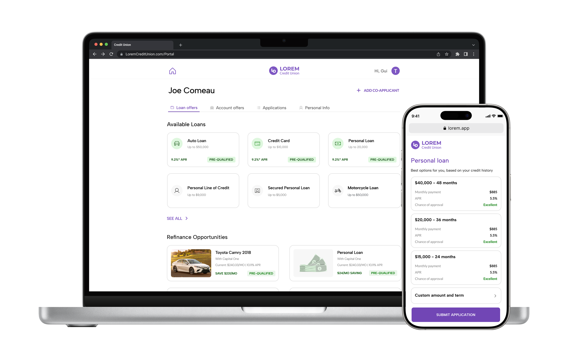
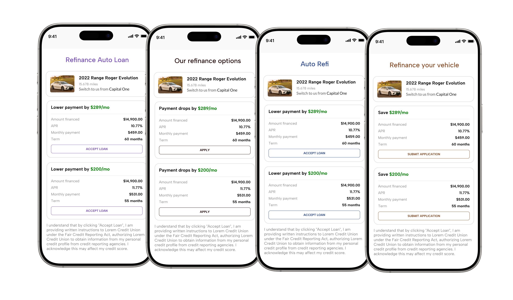
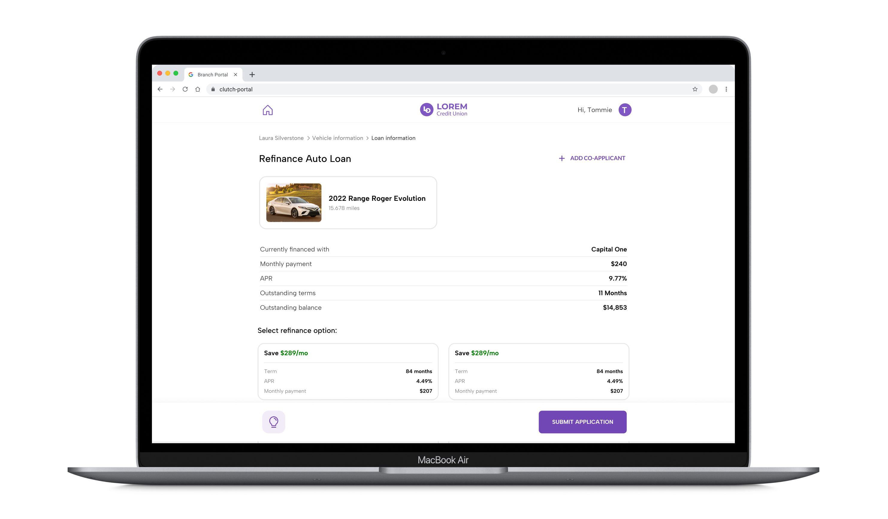

© Designed & coded by Guilherme Cerqueira - 2025
CUI Design System
Unifying fragmented fintech experiences into one scalable, brand-flexible system

TL;DR:
What
I led the creation of a scalable design system to unify the Staff and Online Portals, addressing broken MUI components and white-labeling challenges for 120+ credit unions.
Why
The fragmented system caused inefficiencies, poor UX, and lacked flexibility for varied credit union branding needs.
How
Collaborating with engineers, I conducted a UI audit, created design tokens, and built scalable React components. I convinced stakeholders with prototypes and metrics showing improved development speed and consistency. Comprehensive documentation ensured seamless adoption across teams.
Result
The system reduced feature delivery time by 30%, visual bugs by 40%, and achieved full team adoption. Moving forward, I'd focus on better contribution guidelines, expanded accessibility testing, and earlier end-user involvement.
Overview
We were building multiple fintech tools — from public loan portals to in-branch staff apps — but had no shared design system. Components were inconsistent, styles broke, and UX varied across products.
Parts of the app used outdated Material UI (MUI), which made theming rigid and slowed down devs. Engineers wanted to ditch MUI for a system they could fully control and maintain.
To complicate things, our products were white-labeled for 120+ credit unions, each requiring custom branding — sometimes embedded inside their mobile banking apps.
I led the full design system effort: from strategy and cross-team alignment to design, theming, and component delivery. This included:
UI Audit & Component Inventory
Auditing existing components and UI debt
Foundational Tokens & System Architecture
Creating the foundational design tokens and component architecture
Figma Library Design & Maintenance
Designing and maintaining a Figma library
React Components & Storybook Setup
Coding core components in React and managing Storybook
Engineering Rollout & MUI Deprecation
Partnering with engineers to roll out and replace legacy MUI components
Cross-Team Adoption & Advocacy
Evangelizing usage across product and engineering teams
The Problem
We were scaling fast, but our design tooling wasn’t keeping up. Here’s what we were facing:
Broken MUI-based components
Across all products.
Two separate frontends
One for internal branch officers, and one for public-facing loan applicantsWhite-label requirements
120+ credit unions, each needing to match their brandDuplicate efforts
Different teams re-creating the same components with minor variationsHeavy inconsistency
UX Modals, buttons, and forms looked and behaved differently depending on the product
How many inconsistencies can you spot? There were MANY more across the products. Each element had a separate code and the systems had no shared components. Ouch.
Strategy & Rollout
I knew a design system wouldn’t succeed unless it addressed both designer and developer needs — and unless it was built with flexibility in mind. Here's how I approached it:
-
Audit & Inventory
Conducted a UI audit to identify key issues and worked with developers to assess replacing MUI.
-
Foundation First
Created a scalable token system for colors, typography, and spacing, and built Figma themes for real-time white-label previews.
-
Defining Design Principles
Led workshops with cross-functional teams to establish core principles: simplicity, consistency, accessibility, and scalability.
-
Component Library
Designed 40+ components with states, variants, and usage guidelines. Coded React components and maintained the Storybook library.
-
Support for Two Products
Built flexible layout templates for Staff and Online Portals, with a live theming toggle in Figma for Credit Union branding.
-
Documentation & Onboarding
Developed Figma documentation, detailed Notion guides, and created Loom videos to onboard designers and engineers.
Raw example of an audit of some of the most used and most problematic components, apart from the MUI ones
Peek into the Figma file for the Design System, organized with specific pages for tokens, primitives and with +40 components and their variants. We also see the Design principles.

Since the products were white-labeled, I divided the color usage into two categories: System colors and Partner Colors. System colors are default colors used as Primary colors for system purposes, like main Typography, Backgrounds and to inform statuses. They should not differ from one CU to other. The 6th color cell ( 500 ) generally satisfies WCAG 2.0's 4.5:1 minimum contrast ratio (AA level), and is used as the default for the palette.
First version of the color tokens
Typography and styling abstraction used to ensure consistency and standardize text throughout the systems.
Random examples of components and variants
Screenshot of the Storybook documentation of a component
Each component was defined with clear variants and attributes (e.g., active, disabled, primary, secondary), offering flexibility while maintaining design consistency. All variants were organized in a grid on each component's Figma page for easy reference and implementation. We followed the same patterns in Storybook.
Convincing Stakeholders
Buy-in wasn’t immediate. MUI was “working,” and teams were focused on shipping features. But with the Staff Portal starting from scratch, I proposed using it to build our new system right — no MUI, clean components in Storybook. Quick prototypes, side-by-side mockups, and rough dev-time savings helped seal the deal.
Prototyping pain
I rebuilt a few of our most painful UI components and showed how the new system made them cleaner, more maintainable, and scalable.Visual comparison
I created side-by-side mockups of the broken MUI components vs. the new unified design system.Metrics
Talked to devs and estimated how much time we’d save in dev cycles if we invested in the new system
The card component was an example of a scalable, clean and maintainable component that was key in convincing stakolders. It could be used in different scenarios and could save a lot of development time in a lot of occasions.
The very same card component used in live contexts, later on when the DS was rolled out.
With a working example in the Staff Portal and real dev progress in Storybook, the benefits became hard to ignore. Eventually, we got the green light — and the engineering team began deprecating MUI in the Online Portal and replacing it with our new system, component by component.
White-Labeling: A Major Challenge
Because the company served dozens of credit unions, each product needed to match the branding of the partner institution. In practice, that meant:
- Need to be very strict on system colors vs brand colors
- Components needed to adapt to different brand palettes
- The system had to look like a seamless part of each credit union's ecosystem
To solve this, I designed a flexible token architecture and created a Figma theming system where we could toggle between brand presets. This made it easy to validate themes visually, share previews with clients, and keep consistency without duplicating files.
Brand colors of each customer. The first color is the primary color of the Credit Union brand - which would be applied on certain elements of the DS.
Example of theme switching live in Figma. We had the same feature in Storybook so we could test the components live with all the colors of our customers. See that only the clickable elements use the brand colors, while system colors, like a "Positive" variant of the badge, keeps using the green system color.

The white-labeling allowed minor customizations so the Credit Unions had their brand pallete present, as well as customizable copy on some elements, like CTAs and headers
Staff Portal vs. Online Portal
One of the biggest challenges was designing a system that worked across two very different products:
-
Staff Portal:
Used by Credit Union employees in-branch. Desktop-only. Requires information density, more powerful tooling, and task-focused workflows. Branding is flexible but still needs to reflect each Credit Union’s identity. -
Online Portal:
Used by members to apply for loans or open accounts. Mobile-first. Often embedded inside the Credit Union’s mobile app, so visual integration and responsiveness are critical. Accessible, simple, and trust-building design is essential here.
Designing for both meant I had to keep the system flexible without fragmenting into two separate systems. Here’s how I tackled the challenge:
Created variants for responsive needs:
Components like navigation, tables, and form inputs had alternate versions for mobile vs. desktop use cases.Used adaptive theming:
While the Staff Portal could handle broader color use, the Online Portal needed stricter adherence to the Credit Union’s branding and mobile platform guidelines. I built flexibility into the token structure to support both needs.Kept user context in mind:
The tone, density, and interaction feedback differed across portals — so I documented usage guidance based on audience (e.g. “Use this version for branch staff” vs. “Use this variant for mobile loan applications”).Shared core components, different wrappers:
Where possible, I reused base components but wrapped them in layout containers appropriate to each portal’s needs.Tested in Figma with live theming:
I used theming toggles to preview both Staff and Online experiences in real time, speeding up design decisions and stakeholder approvals.
Example of online portal before and after the Design System

Example of a similar screen on Staff portal, using the same components, but with adapted contexts for the right use cases
The end result was a unified but context-aware system — one that respected the needs of two very different audiences, while giving engineers and designers a shared set of building blocks.
Trade-Offs & Decisions
Design systems are about smart constraints. One key trade-off was limiting how much Credit Unions could customize their branding. Many wanted full control over colors and layout, but that wasn’t scalable or accessible. I worked with the CS team to understand expectations and align on a solution: Credit Unions could define one primary brand color — everything else followed system rules. I created demos to show the risks of full customization and helped CS communicate the limits. For non-accessible brand colors (like bright red or light yellow), I built a fallback system color to ensure contrast and clarity without breaking brand identity.Trade-off:
Limited full customization to a single primary color instead of unlimited overrides.Why:
Prevent visual fragmentation, maintain accessibility standards, and speed up development with predictable theming logic.Result:
Credit Unions got just enough visual ownership to feel represented, while we kept the system cohesive, supportable, and accessible.
The Results
30% faster feature delivery
after full rollout~40% fewer visual bugs
reported in QA100% design team adoption
within the first quarterMUI fully deprecated in 6 months
120+ credit unions successfully themed
using our system
What I Learned
Building this design system from scratch across two separate products taught me valuable lessons not just about design craft — but also about technical architecture, organizational alignment, and scaling UX across real-world constraints.
-
Flexibility beats uniformity:
: Designing for multiple themes, breakpoints, and user contexts taught me to prioritize adaptability over rigid consistency. -
Code informs design:
Building in React and Storybook deepened my understanding of dev constraints, shaping how I structure and document components. -
Responsive by design:
Supporting both mobile-first and desktop-heavy products showed me the value of planning for responsiveness from the start. -
Change requires strategy:
Replacing legacy MUI components taught me to frame design decisions in terms of business and dev impact, not just visuals. -
Influence is part of design:
Convincing stakeholders reinforced that storytelling, prototypes, and metrics are key tools in driving alignment.
What I’d Improve if I Did It Again
While I’m proud of the system we delivered, there are things I would do differently next time — both tactically and strategically:
-
Align early, not late:
I’d involve stakeholders from day one to co-create the vision, speeding up buy-in and increasing shared ownership. -
Document contribution paths upfront:
Clearer workflows for proposing and updating components would have improved adoption and reduced confusion. -
Build in accessibility from the start:
Automating WCAG checks and usability testing earlier would have ensured quality across white-label variations. -
Include real users sooner:
I’d integrate feedback from actual end-users earlier, especially for the mobile-heavy Online Portal, to validate design decisions in context.
Final Thoughts
Looking back, building the CUI Design System was a defining project in my career — one that sat at the intersection of design, engineering, product strategy, and systems thinking.
It wasn't just about making things look consistent. It was about enabling scalability: giving designers faster starting points, helping engineers ship faster with fewer regressions, and making sure our white-labeled experience felt native to each Credit Union's identity — across both the Staff and Online portals.
It also pushed me to step into a leadership role: driving alignment across cross-functional teams, identifying legacy issues that were causing real UX and dev friction, and shaping the future of our platform's design language through code, documentation, and real-time collaboration in Figma.
More than anything, this project reaffirmed something I deeply believe: that systems work is only successful when it's inclusive — of edge cases, of teams, of use contexts, and of long-term goals. And that the best design systems don’t just unify pixels — they unify people.